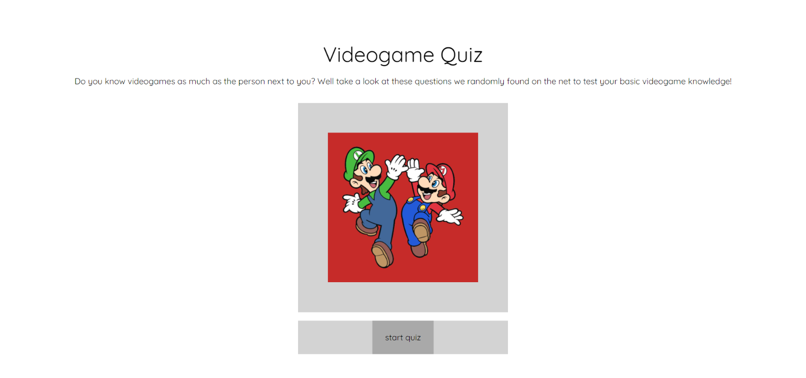
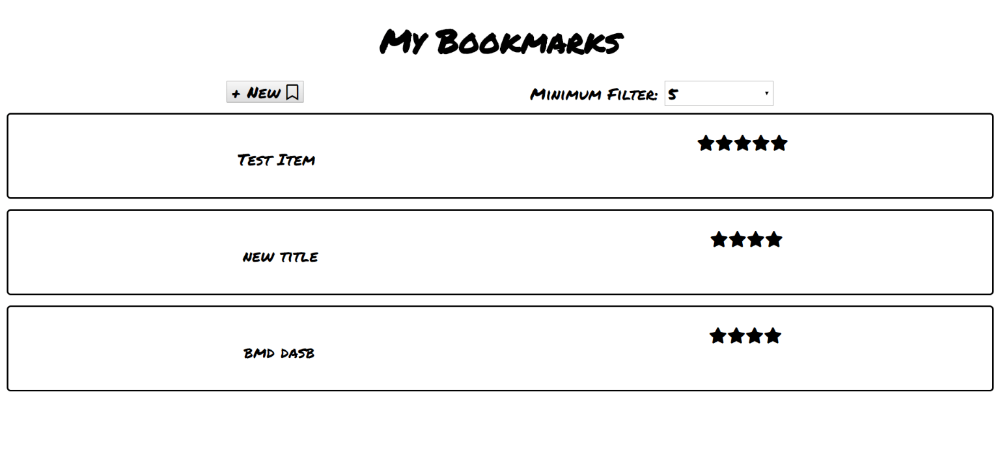

Hello!

My name is Sophia Koeut from San Diego. I like to convert tea into code to make the web beautiful!
I've jumped from being a Nursing Student to influencing children with Autism but I couldn't quite see myself being in those fields long-term. Along my life journey, a friend who knew my love for gaming suggested that I look into coding as my next stop. This is where my development journey begins . Web Development. Just as we humans have different genetic makeup, code for one function can be made with several possibilities. I set out to understand how code is capable of making the web a more beautiful and interactive place. I thrive on learning from other developer's problem-solving skills and approaches to code. From my experience working with clients, I'm a great team player and strive for meaningful and productive collaboration.
When I'm not coding if and else statements...
The Works
Videogame Quiz 
Are you a videogame whiz? Put your knowledge to the test by taking this quiz built on HTML, CSS, Javascript, and Jquery. Steam-powered through nerdy blood, sweat, and tears.
My Bookmarks
Accessing Thinkful's API, create and add favorite websites to a list to reference another time. This App was built on HTML, CSS, Jquery, and Javascript.